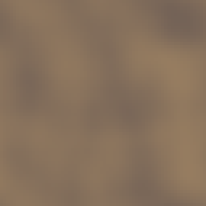
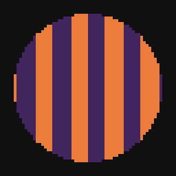
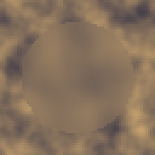
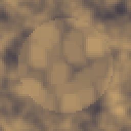
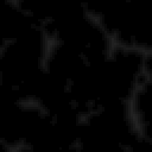

Six nodes, and only two of them are a plain blur. Blur itself covers box, gaussian and four flavors of directional smear in one node; Sharpen and Min Max push in the opposite direction, sharpening or actually moving an edge instead of softening it; Slope Blur and Non Uniform Blur read a second image to decide where and which way to drag pixels; Distance measures instead of filtering, turning a silhouette into a height field.
I use Blur constantly and the other five occasionally, each for a specific job: Non Uniform Blur for a depth-of-field style falloff, Slope Blur for an erosion look, Distance to build a rounded highlight or an outline from nothing but alpha. None of them touch color, only how detail is spread or measured across the image.

Blurs in box, gaussian, directional, radial or spin form, or by an angle map.
Type picks the shape: Box is the plain uniform blur and the cheapest; Gaussian runs two box passes at different radii for a softer falloff with less of the box's visible square edge; Directional streaks along a fixed Angle; Radial streaks outward from the canvas center (a zoom blur); Spin streaks around the center instead of away from it; Anisotropic reads its direction per pixel from a wired Angle map, so the streak can follow a flow field or a normal map instead of one fixed angle.
Radius (1 to 16) is the one number that matters everywhere; past 8 or so at typical pixel-art canvas sizes the result stops reading as blur and starts reading as smear. I use Gaussian at low radius to prep a Glow input, and Anisotropic with a Noise wired into Angle map for a wood grain or brushed metal streak that a fixed-angle Directional blur cannot fake.
In: In (image), Angle map (image) · Out: image
Parameters

Drags pixels downhill along the slope of the map you feed it.
Reads a Slope map's local gradient and drags each pixel downhill along it, repeating for Samples steps and combining what it picks up along the way by Mode: Average smears and blends, Min and Max instead keep the darkest or lightest sample found, which reads as an erosion or a deposit rather than a soft drag. Intensity sets how far each step moves in pixels.
This is the node behind a stylized erosion look: wire a height field into Slope and the color image drags along its contours, pooling into the low points. Mode Max on a noise slope reads like sediment or snow catching in the cracks; Min reads like dirt settling into the same cracks with the opposite tone. With no Slope wired the node passes the input through unchanged rather than doing nothing useful with a flat gradient.
In: In (image), Slope (image) · Out: image
Parameters

Blurs heavily where the mask is bright and not at all where it is black.
Blurs by however bright the Mask is at each pixel, up to Max radius where the mask is pure white, not at all where it is black; Invert mask flips that reading. Internally it interpolates between a few fixed blur strengths rather than computing a true per-pixel radius, which keeps it fast at higher radii.
The standard use is a depth-of-field fake: a radial gradient or a Distance output as the mask gives you a sharp foreground and a soft background (or the reverse, with Invert mask) without hand-painting a blur amount. With no Mask wired the node returns the input untouched, so it is safe to leave unconnected while wiring up the rest of a graph.
In: In (image), Mask (image) · Out: image
Parameters
Sharpens edges by subtracting a smoothed version of the input.
An unsharp mask: Intensity (0 to 100) sets how strongly the difference between the pixel and its blurred 3x3 neighborhood gets added back. At 0 it is the identity, no extra pass, no cost. Alpha is left alone, only color sharpens.
I keep this well under 50 on pixel art; the fixed 3x3 kernel is aggressive at small canvas sizes and starts ringing (a pale halo around every edge) faster than it would on a photograph. It is a good last step after a Blur that softened detail you want back selectively, or after scaling a texture down when the downscale itself softened edges.
In: In (image), Mask (image) · Out: image
Parameters

Grows or shrinks the bright areas by taking the neighborhood maximum or minimum.
Mode Dilate grows the bright areas, Erode shrinks them, both by Radius pixels measured as an actual neighborhood maximum or minimum, not a blur: the edge genuinely moves rather than fading. Read on alpha or luminance depending on what carries the shape.
Use Dilate to pad a silhouette a couple of pixels before an Outline or a Bevel so the effect has room to work without eating into the shape; use Erode to clean up a noisy mask by shrinking away single-pixel fringes before growing it back with Dilate (an opening pass). Invert mask works on the node's own Mask input as usual.
In: In (image), Mask (image) · Out: image
Parameters

Measures how far each pixel lies from the edge of the silhouette, signed or as a mask.
Measures, per pixel, how far it sits from the edge of the silhouette read off Source (Auto picks alpha if the input has any transparency, luminance otherwise). Output Distance is black outside the shape and brightens toward the interior, capped at Range (px); Signed instead sits at mid grey exactly on the edge, lighter outside and darker inside within plus or minus Range; Mask redraws the silhouette flat, ignoring Range.
Combine mask blends a second wired image's field into the first with Min or Max, which on the Signed reading is a union or an intersection of the two shapes rather than a plain overlay. Tiling wraps the measurement across the canvas edges. I use the Signed output straight into a Curve or a Gradient Map for a rounded highlight along a shape's rim, which is a cheap alternative to a real Bevel when only a couple of tones are needed.
In: In (image), Mask (image) · Out: image
Parameters